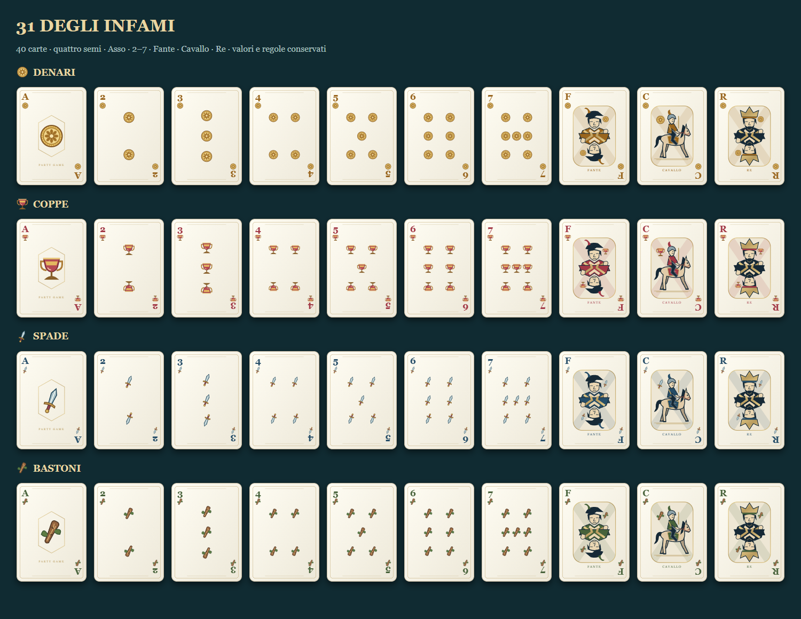
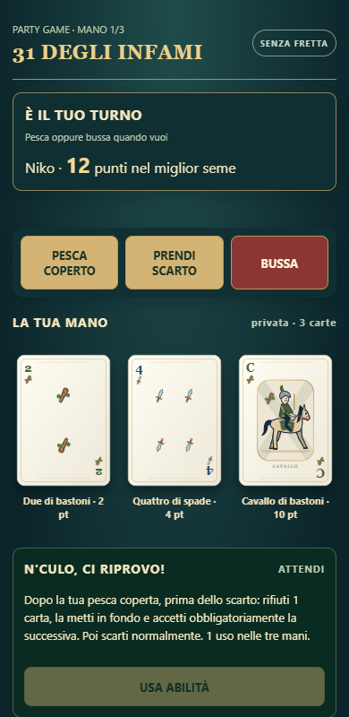
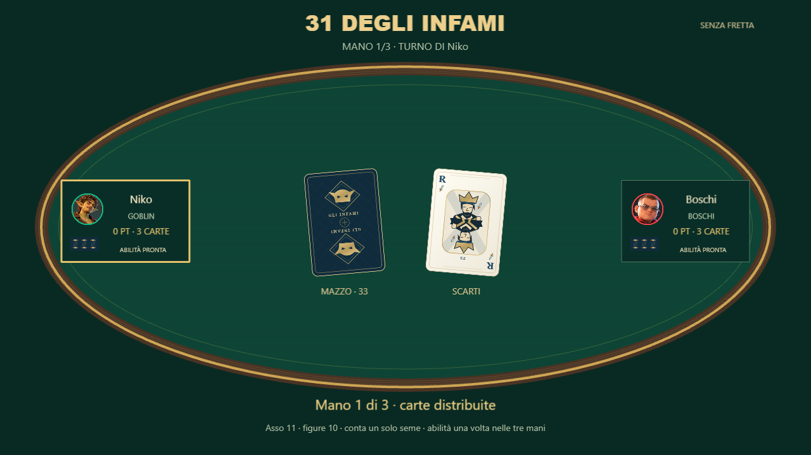

31 degli Infami · Mazzo italiano
40 carte: coppe, denari, spade e bastoni.
Asso, 2–7, Fante, Cavallo e Re per ciascun seme. Stesso dorso, regole e turni senza timer.

Coppe come calici, denari come monete dorate, spade con lama e impugnatura, bastoni di legno con foglie. Fante, cavaliere a cavallo e Re coronato.
Telefono: Cavallo di bastoni, nomi italiani e simboli leggibili.
TV: carte italiane e retro personalizzato conservato.Typecheck e build finale; controllo delle 40 carte, verifica visiva TV/telefono e assenza di semi francesi. Mazzo completo · Dettagli